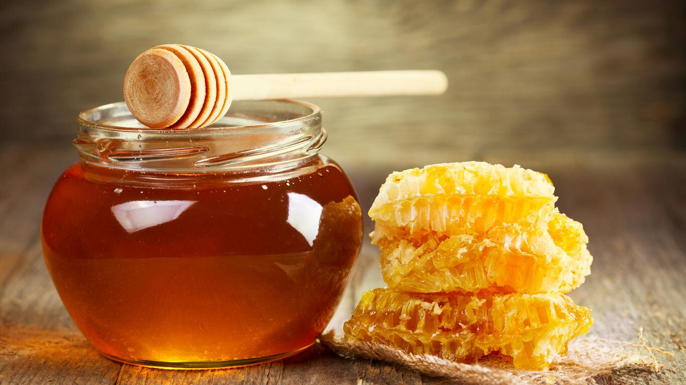

История меда – это удивительная повесть о тесных взаимоотношениях между человеком и пчелами. О том, насколько долгим был путь от первого собранного лакомства до массового производства нектара. И сколько усилий нужно было приложить, чтобы дикое насекомое наконец-то смогло подружиться с нами.
Липа — лиственное дерево из семейства мальвовых. Его ароматные цветы, которые распускаются в июне-июле, служат для пчёл богатым источником нектара. С одного взрослого растения можно получить 15-20 килограмм липового меда. Это дерево распространено в России, особенно в европейской и западно-европейской частях. Поэтому добыча меда ежегодно проводится на пасеках Кавказа, Сибири и Башкирии.
Понятие цветочного меда двоякое и нуждается в пояснении. В первую очередь, цветочным медом называют продукт, вырабатываемый пчелами при сборе нектара цветущих растений. Эту группу отделяют от падевого меда – результата переработки пчелами сладких выделений или медвяной росы – капель сиропа, выступающих на поверхности некоторых тростниковых и хвойных растений.
Мёд завоевал популярность, благодаря уникальному вкусу и лечебным свойствам, которые использует как народная, так и традиционная медицина. Гречиху массово высаживают на Алтае и других горных регионах, а цвести она начинает с конца июня и до начала августа.